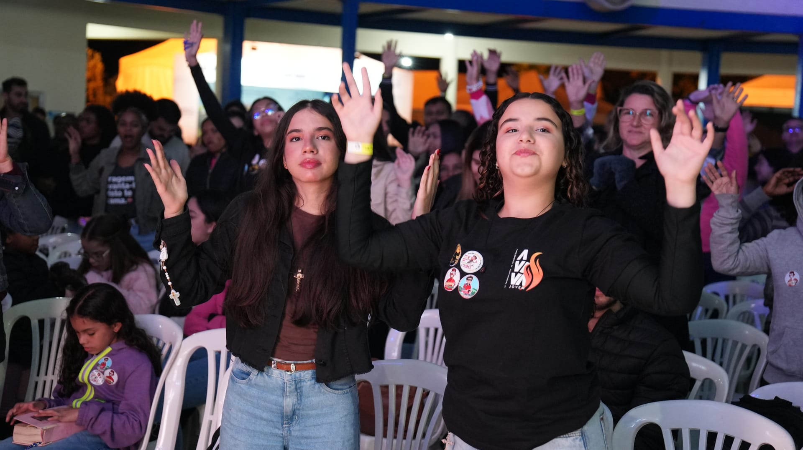
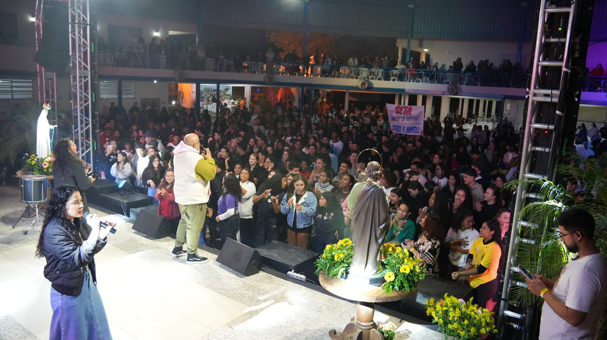

Encontre um grupo
Grupos, núcleos e projetos no Rio de Janeiro e em Minas Gerais.
Estados com grupos
Cidades com grupos
Todos os grupos


Grupos, núcleos e projetos no Rio de Janeiro e em Minas Gerais.
